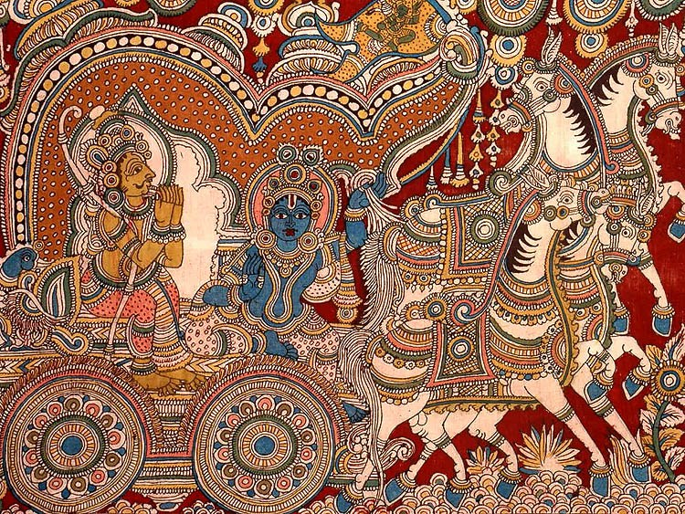

Kalamkari is an ancient style of hand painting done on cotton or silk fabric with a tamarind pen, using natural dyes. The word Kalamkari is derived from a Persian word where ‘kalam‘ means pen and ‘kari‘ refers to craftsmanship . This art involves 23 tedious steps of dyeing, bleaching, hand painting, block printing, starching, cleaning and more. Motifs drawn in Kalamkari spans from flowers, peacock, paisleys to divine characters of Hindu epics like Mahabharata and Ramayana. Nowadays, this art is primarily done to create Kalamkari sarees.
.